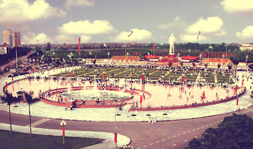

Quảng Trường
Nơi tôi yêu thứ nhì chỉ sau Cửa Lò, nếu có điều kiện tôi sẽ ra biển mỗi ngày,tất nhiên điều đó là không thế, bù lại có 1 khoảng thời gian cô đơn, rảnh rỗi tôi hầu như ngày nào cũng ra quảng trường. Ở đây có tượng Bác Hồ to, sân cực rộng giống kiểu quảng trường Ba Đình, và điều tôi thích nhất ở đây là một ngọn núi nhân tạo rất nhiều cây cối, đi dạo trên núi với không khí trong lành thật sự làm người ta nhẹ nhõm và tĩnh lặng tâm hồn.
Công trình tượng đài Bác Hồ và Quảng trường Hồ Chí Minh được xây dựng vào năm 2000, khánh thành vào 19 tháng 5 năm 2003 đúng dịp kỷ niệm 113 năm ngày sinh nhật của Chủ tịch Hồ Chí Minh.
TTượng đài Bác Hồ được làm bằng chất liệu đá granít Bình Định cao 18 m, nặng 150 tấn. Tượng được đặt tại Quảng trường mang tên Người rộng gần 11 ha với nhiều hạng mục như: lễ đài, cột cờ, đường diễu hành, sân hành lễ, hệ thống điện chiếu sáng, thảm cỏ, cây xanh, hệ thống đài phun nước tạo cảnh, núi Chung mô phỏng theo núi Chung ở Làng Sen quê của Người.
Từ khi thành lập đến nay, nơi đây không chỉ là một trong những biểu tượng văn hóa của nhân dân Nghệ An, mà còn là địa chỉ quan trọng của du khách trong và ngoài nước ghé thăm trên con đường di sản miền Trung.

.png)
.png)
.png)